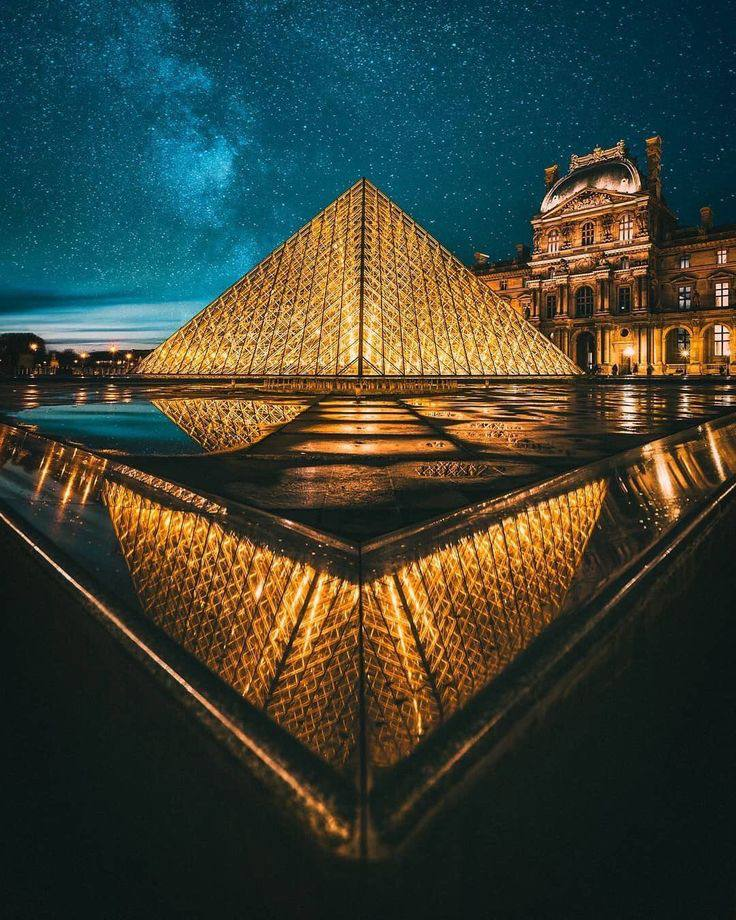

ll était une fois Lutèce, une petite cité où marchands et rivières donnaient vie à ses ruelles. Au fil des siècles, elle devint Paris, se parant d’avenues majestueuses sous Louis XIV, puis s’embrasant de liberté pendant la Révolution.
Paris devint ensuite le refuge des artistes et des rêveurs, avec Montmartre et la Belle Époque illuminant ses nuits. Malgré les épreuves des guerres du 20ᵉ siècle, la ville se releva, forte et rayonnante.
Aujourd’hui, Paris, mélange de passé et de présent, reste une source d’inspiration, vibrant de vie et d’histoire.
La Tour Eiffel
La tour Eiffel, située à Paris, est l’un des monuments les plus emblématiques au monde. Construite par Gustave Eiffel et son équipe pour l’Exposition universelle de 1889, elle symbolisait les avancées technologiques de l’époque.
D’une hauteur de 330 mètres aujourd’hui (avec ses antennes), elle était à l’origine la structure la plus haute du monde. Composée de fer puddlé, elle compte trois étages accessibles au public, offrant des vues panoramiques sur Paris.
Initialement critiquée, elle est devenue un symbole de la France et un site touristique majeur, accueillant environ 7 millions de visiteurs par an.
Le Louvre
Le Louvre, situé à Paris, est le plus grand musée du monde et un monument emblématique de la France. Initialement construit comme une forteresse au XIIᵉ siècle, il fut transformé en palais royal, puis en musée en 1793 après la Révolution française.
Il abrite plus de 35 000 œuvres d’art, dont des chefs-d’œuvre célèbres comme la Joconde de Léonard de Vinci, la Vénus de Milo et le Radeau de la Méduse. Sa pyramide de verre, conçue par I. M. Pei en 1989, est devenue une entrée moderne et iconique.
Avec des collections couvrant des milliers d’années et attirant des millions de visiteurs chaque année, le Louvre est un symbole de l’art et de l’histoire mondiale.

Arc de Triomphe
L’Arc de Triomphe, monument emblématique de Paris, incarne la grandeur et l’histoire de la France. Érigé à la demande de Napoléon Bonaparte en 1806, il célèbre les victoires des armées françaises et rend hommage aux soldats qui ont combattu pour la nation. Situé au cœur de la place de l’Étoile, à l’intersection de douze avenues majestueuses, il offre une vue imprenable sur la capitale depuis son sommet.
Symbole de fierté nationale, l’Arc de Triomphe est aussi un lieu de mémoire, abritant sous ses voûtes la flamme éternelle qui honore le Soldat Inconnu de la Première Guerre mondiale. Chaque pierre raconte un fragment de l’histoire de France, faisant de ce monument un incontournable pour comprendre le patrimoine et l’identité du pays.
Musée d'Orsay
Le musée d’Orsay, installé dans l’ancienne gare éponyme au cœur de Paris, est un lieu incontournable pour les amateurs d’art et d’histoire. Ouvert en 1986, il abrite une des plus riches collections d’œuvres d’art du XIXᵉ et du début du XXᵉ siècle, avec des chefs-d’œuvre de maîtres tels que Monet, Van Gogh, Renoir ou Degas.
Ce musée ne se distingue pas seulement par ses trésors artistiques, mais aussi par son architecture unique, où l’élégance de l’ancien bâtiment ferroviaire se marie harmonieusement avec l’art. Il offre une immersion dans les mouvements artistiques majeurs de l’époque, comme l’impressionnisme et le post-impressionnisme, faisant du musée d’Orsay un témoin vivant de la créativité et de l’effervescence de cette période.
Palais Garnier
Le Palais Garnier, véritable joyau architectural de Paris, est l’un des opéras les plus célèbres au monde. Inauguré en 1875 et conçu par l’architecte Charles Garnier, ce monument emblématique du style néo-baroque incarne le luxe et le raffinement du Second Empire.
Avec son grand escalier en marbre, ses dorures scintillantes, et son plafond magnifiquement peint par Marc Chagall, le Palais Garnier est bien plus qu’un lieu de spectacle : c’est un chef-d’œuvre artistique et historique. Aujourd’hui, il accueille opéras, ballets et visiteurs curieux d’explorer son histoire et son élégance intemporelle, faisant de chaque visite une expérience magique.
Basilique Sacré Coeur de Montmartre
Perchée au sommet de la butte Montmartre, la basilique du Sacré-Cœur domine Paris de sa majestueuse silhouette blanche. Construite à la fin du XIXᵉ siècle, en réponse à un vœu national après les événements troublés de 1870, cette église emblématique est un symbole à la fois spirituel et culturel.
Son architecture romano-byzantine unique, ses mosaïques grandioses comme le célèbre Christ en gloire, et sa coupole offrant une vue panoramique exceptionnelle sur la capitale attirent des millions de visiteurs chaque année. Lieu de recueillement et de contemplation, le Sacré-Cœur est aussi le cœur battant du quartier bohème de Montmartre, où l’histoire, l’art et la foi se rencontrent dans une harmonie parfaite.
Quelques les Spécialités Culinaires
Croque Monsieur
Le croque-monsieur est un classique de la cuisine française, symbole de simplicité et de convivialité. Ce sandwich chaud, composé de pain de mie, de jambon et de fromage, est souvent grillé à la perfection pour offrir une texture croquante et fondante à la fois. Servi dans de nombreux bistrots ou préparé à la maison, le croque-monsieur est un véritable délice qui s’adapte facilement à toutes les occasions. Bien plus qu’un simple en-cas, il incarne l'art de transformer des ingrédients simples en un repas réconfortant et savoureux. Mais derrière sa recette de base, le croque-monsieur cache de multiples variations, allant des garnitures supplémentaires aux sauces délicieuses, pour satisfaire tous les goûts.
Hachis Parmentier
Le hachis Parmentier est un plat emblématique de la cuisine française, réconfortant et savoureux, qui incarne parfaitement l’art de la cuisine simple mais pleine de saveurs. Composé de purée de pommes de terre et de viande hachée, souvent du bœuf, ce plat est une excellente façon de réutiliser des restes tout en offrant un repas nourrissant et généreux. Sa préparation, qui consiste à superposer la viande et la purée avant de gratiner le tout au four, en fait un plat convivial, idéal pour partager en famille ou entre amis. Bien qu’il soit aujourd’hui un incontournable de la gastronomie traditionnelle, le hachis Parmentier se prête à de nombreuses variations, mettant en lumière la richesse de la cuisine française et sa capacité à s’adapter aux goûts et aux saisons.
Gratiné des Halles
Le gratiné des Halles est un plat traditionnel de la cuisine française, qui fait honneur aux saveurs authentiques et à la générosité des repas populaires parisiens. Né dans les célèbres Halles de Paris, autrefois marché central de la capitale, ce gratiné associe des ingrédients simples mais savoureux, souvent à base de viande, de légumes et d’une délicieuse couche de fromage fondant. Cuit au four jusqu’à obtenir une croûte dorée et appétissante, le gratiné des Halles incarne parfaitement la convivialité et l'esprit des bistrots parisiens où les mets étaient conçus pour régaler et réconforter les travailleurs de l’époque. Aujourd'hui encore, ce plat reste un symbole de la cuisine française rustique et savoureuse, offrant une expérience gustative unique à ceux qui ont la chance de le déguster.